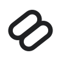
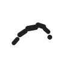
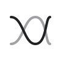
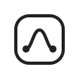
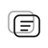
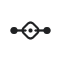
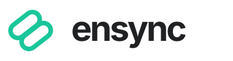

01 / PRIMARY
Continuity Loop
Pure geometricTwo provider sessions interlock around one shared center. The diagonal movement suggests a handoff without breaking the task.
One task. Any provider. Still in context.
Six feature-led SVG directions for a conversation-first AI workspace. Each concept stays minimal, scalable, and grounded in Ensync’s actual product behavior.

Two provider sessions interlock around one shared center. The diagonal movement suggests a handoff without breaking the task.

An ordered route moves through rounded checkpoints, reflecting explicit provider ranking and safe pre-mutation fallback.

Distinct provider paths cross through one retained context while remaining individually legible.

The bounded workspace is the hard project perimeter; the task thread remains safely inside it.

Layered panes express recoverable conversations, tabs, split view, and a conversation-first interface outside an editor.

Equal endpoints connect through one task identity, reflecting the same guarded workflow on the local Host or an SSH worker.
It preserves Ensync’s established linked-loop equity while making the idea explicit: two bounded provider sessions, one continuous task. It is distinctive at app-icon scale and works in one color.
